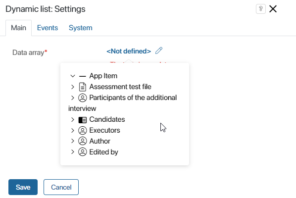
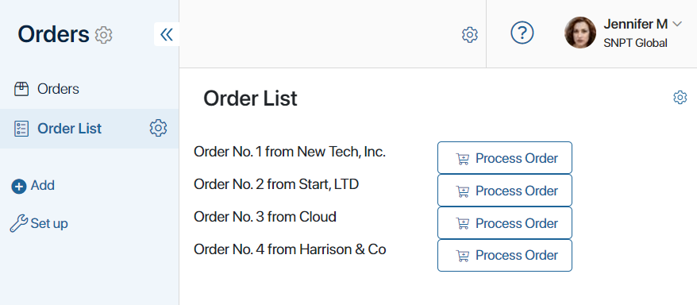
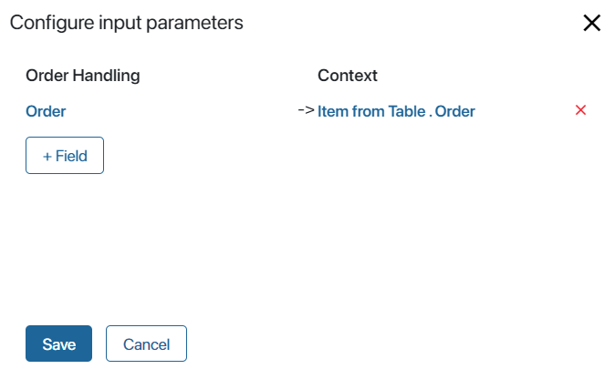

This widget allows you to customize the display template for data stored in Table type fields.
The table that acts as a data source is specified in the widget’s settings. The display template is configured using additional widgets that are placed within the dynamic list.
In the settings of the additional widgets, you can select both app fields and fields of the source table.
To add the widget to a page, drag it to the canvas from the right panel of the interface designer. To learn more, see the Add a widget to a page article. After that, configure the widget’s settings in the pop-up.
Main tab

Data array*. Select the data source for the widget. Click on the  icon, then <Not defined>. Select a Table type field from the page’s context.
icon, then <Not defined>. Select a Table type field from the page’s context.
Events and System tabs
These tabs are similar for all widgets. They allow you to set the widget’s visibility and access permissions, configure the widget’s behavior when the user hovers over it, etc. To learn more about these settings, see System widget settings.
To finish configuration, click Save. Then add other widgets to the dynamic list and click Publish.
Use case
With the Dynamic list widget, you can display a list of items from the Orders app on a separate page and initiate a business process for each of them.

To configure a page with a dynamic list, follow these steps:
- Create a page called Order List and open it in the interface designer.
- Go to the Context tab and add a variable of Table type. In the table’s settings, create a column of type String for the order name and a column of type App for the Orders app item.
- Grant access to the list of orders for the widget. To do this, go to the Settings tab and open the Available items section. In our example, the page and the app are created in the same workspace, so select the option Allow using all items in the workspace. Read about all available options in the Interface designer article.
- Open the Template tab and drag the Dynamic list widget onto the modeling canvas. In the widget’s settings, choose the Table type field you created.
- Inside the dynamic list, add the Columns widget to display other widgets in a convenient way.
- Add the Text box widget to the first column. It will display the order’s name. In the widget’s settings, click the
 icon and select Item from Table > Order name.
icon and select Item from Table > Order name. - Add the Button widget to the second column. In the Action type field, select Start a process and specify the Order Handling business process.
- To ensure that a process instance is launched for a specific item in the list, link the process variable to the widget. To do this, in the button settings, click Configure input parameters. In the window that opens, in the right column, specify the process variable that contains the application, and in the left column, select Item from Table. Order.

- For the dynamic list to work correctly, the table specified in its settings must be populated with data before it is displayed. To display orders in the table when the page is opened, go to the Scripts tab and add the following code:
async function onInit() {
// Retrieve all items from the Orders app
const ordersListItems = await Namespace.app.ordersApp.search().all();
// Initiate the Table type variable by assigning it a value
if (!Context.data.table) {
Context.data.table = Context.fields.table.create();
}
// Create a row in the table for each item from the Orders app
for (const ordersListItem of ordersListItems) {
const row = Context.data.table.insert();
row.name = ordersListItem.data.__name;
row.order = ordersListItem;
}
// Reassign the table value to refresh the widget
Context.data.table = Context.data.table;
}
- To make the page accessible to users, click Save and Publish on the top panel of the interface designer.
As a result, the Order List page will display all orders from the app. You can initiate the handling process for any of them by clicking the button next to its name.
Found a typo? Select it and press Ctrl+Enter to send us feedback